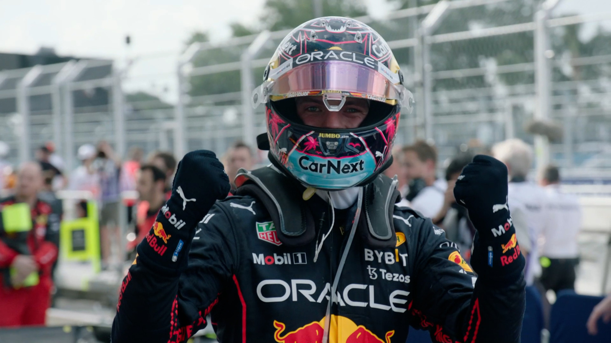

Résumé GP de Miami 2022
Rédigé par Clément Lazzarini, le 08/05/2022
Avantage Verstappen
Ce sont les deux Ferrari qui partent depuis la première ligne de ce tout premier Grand Prix de Miami. Mais Verstappen passe directement Sainz au premier virage par un joli extérieur. Mais sur ce circuit qui privilégie la puissance moteur, c'est assez logiquement que la Red Bull du champion du monde a pris la tête assez tôt dans cette course. Il n'a quasiment jamais été trop inquiété par un Charles Leclerc derrière lui qui donnait tout ce qu'il pouvait pour combler son manque de vitesse de pointe.
Un Grand Prix un peu ennuyeux
Cependant, on a eu le droit à un Grand Prix quelque peu ennuyeux tout de même, je trouve. La faute cette fois-ci à un surfaçage de la piste qui ne donnait que très peu d'adhérence aux machines ne permettant pas de se suivre vraiment dans les virages. Mais aussi au trop faible nombre de zones de dépassement disponible sur ce tracé.
Des erreurs et de belles surprises
Malgré tout, on a eu le droit à quelques erreurs et surprises de la part des pilotes. Tout d'abord Fernando Alonso qui a une première fois heurté l'arrière droit de Lewis Hamilton au premier tour, puis heurté l'arrière gauche de Pierre Gasly après un freinage trop tardif. Ce qui provoqua par la suite l'accrochage entre Lando Norris et Pierre Gasly au 41èmetour, provoquant une Safety Car et l'abandon des pilotes. À noter, la jolie 7ème place de Valtteri Bottas, suivie par les deux Alpine et la Williams d'Alexander Albon.